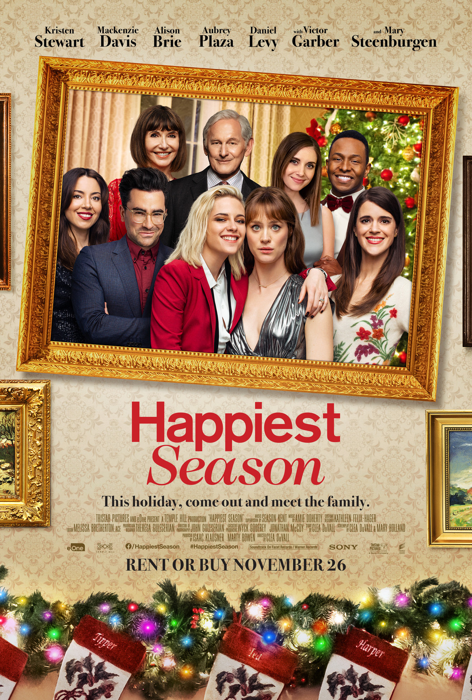

The Happiest Season
7/10
This is my favorite Christmas movie just because it’s gay. That’s not saying much though. All in all, this movie was extremely disappointing. I love Kristen Stewart and she deserves better! Give me one globdamn reason why she didn’t end up with Aubrey Plaza. ONE!!! Really, Clea DuVall? Daniel Levy is the best character in this movie.